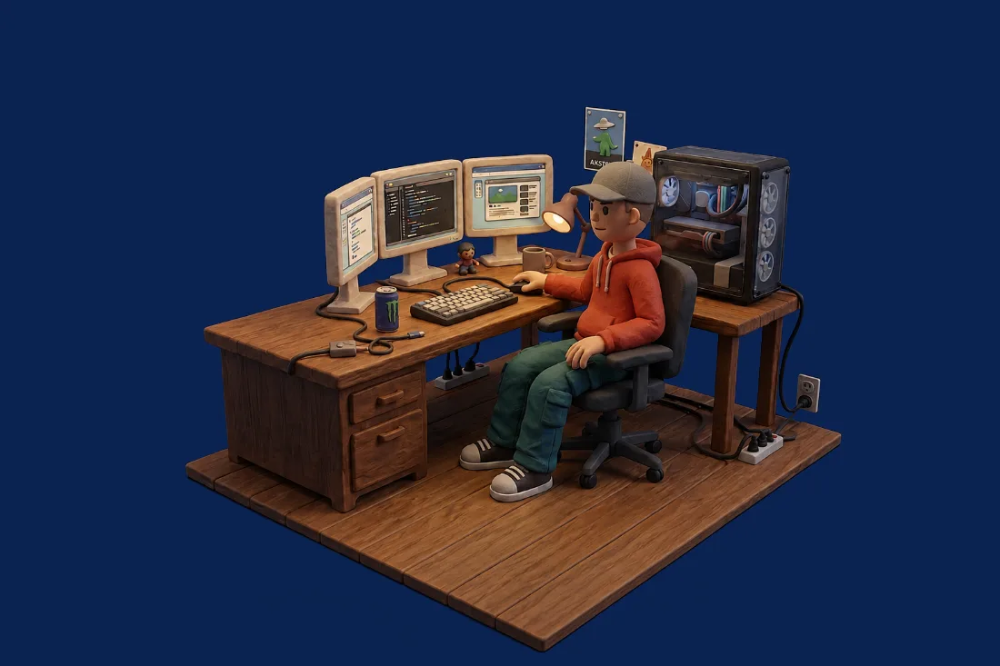

Trato directo y compromiso profesional
Mi nombre es Darío Domínguez García y estoy al frente de El Escaparate, un estudio de diseño y programación web con sede en Madrid. El interlocutor que atiende tu primera consulta es el mismo profesional responsable del diseño visual, el desarrollo del código y el soporte técnico posterior. Este modelo prescinde de intermediarios comerciales y garantiza coherencia entre lo acordado y el resultado final.

Desarrollo web a medida
Existen soluciones basadas en plantillas predefinidas que permiten un montaje rápido, pero que con frecuencia presentan inconvenientes a medio y largo plazo: un peso excesivo, problemas de visualización en dispositivos móviles y limitaciones técnicas insalvables ante requisitos específicos.
Mi metodología se basa en la programación directa de código. Esto garantiza:
- Velocidad de carga óptima, incluso en condiciones de conectividad reducida.
- Identidad visual única, alineada con la personalidad y los valores de tu empresa.
- Flexibilidad técnica, con soluciones viables ante requerimientos no convencionales.
Metodología de trabajo
- Comunicación clara y accesible: explicaciones comprensibles, sin tecnicismos innecesarios.
- Asesoramiento honesto: criterio profesional sobre qué soluciones convienen a tu negocio y cuáles no.
- Disponibilidad rigurosa: atención durante el horario comercial y cumplimiento estricto de los plazos.
- Dedicación exclusiva: un número limitado de proyectos simultáneos para asegurar la calidad de cada entrega.
Principios fundamentales de desarrollo
Criterios técnicos orientados a garantizar la durabilidad y la eficacia del proyecto en el tiempo.
Rendimiento y velocidad móvil
Optimización minuciosa de cada recurso e imagen, eliminando dependencias innecesarias para asegurar una carga inmediata desde cualquier dispositivo y entorno.
Accesibilidad y usabilidad universal
Diseño de interfaces con tipografías legibles, contrastes adecuados y navegación compatible tanto con pantallas táctiles como con teclados y lectores de pantalla.
Propiedad y autonomía del cliente
El dominio, el alojamiento y las credenciales de acceso permanecen siempre a tu nombre desde el inicio del proyecto. No se generan dependencias técnicas ni contractuales innecesarias.
Base tecnológica
Desarrollo construido sobre estándares web puros (HTML, CSS y JavaScript), minimizando las dependencias externas para evitar obsolescencias tempranas. Cuando el proyecto requiere tecnologías complementarias, se integran de forma justificada y eficiente.
Esta misma web sirve de ejemplo: en la página de trabajos hay un escaparate que captura en directo la dirección que le pongas, para que compruebes el mecanismo con tu propia web.
Ver cómo funcionaSectores con los que colaboro
- Centros de estética, peluquería y estudios de tatuaje.
- Empresas de alimentación y obradores artesanales.
- Reformas, construcción y servicios técnicos.
- Proyectos culturales e instituciones.
Especialización en pequeñas y medianas empresas donde la atención al cliente y el trato personalizado son elementos diferenciales. El estudio está en Madrid, y en Madrid nos podemos ver en persona; el resto de España lo llevo por videollamada y por WhatsApp, que es como se trabaja la mayoría de los encargos.
Contacto y valoración inicial
Te invito a solicitar una sesión de consultoría inicial de 30 minutos, sin compromiso, en la que analizaremos tus necesidades técnicas y elaboraremos una estimación formal de tu proyecto.